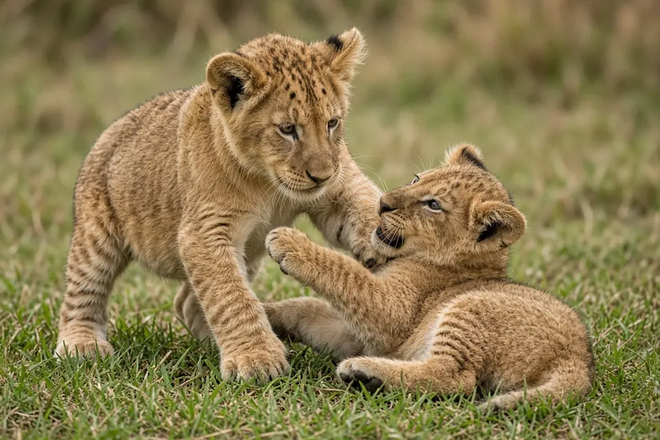

Home › Blog › Why do male lions kill cubs?
Why do male lions kill cubs? What the research on lion and leopard infanticide shows
Male lions kill cubs because it speeds up their own chance to breed. When a new coalition of males takes over a pride, the cubs already there were fathered by the males they replaced. Killing those cubs ends the mothers' nursing, so the females come back into breeding condition sooner and the newcomers can sire cubs of their own before they too are pushed out. Scientists call this sexually selected infanticide. It is not unique to lions: in a long term study of solitary leopards in South Africa, killings by males accounted for almost half of cub deaths with a known cause.
What happens when new males take over a pride
A lion pride is built around related females and their cubs, while adult males hold the pride as a coalition for a limited time (see why do lions live in prides?). Sooner or later a rival coalition arrives and drives the resident males out.
Craig Packer and Anne Pusey studied what follows in Tanzania's Serengeti and Ngorongoro Crater lions (The American Naturalist, 1983). They reported that a male replacement in a pride results in considerable cub mortality, even though mothers try to defend their cubs or avoid the new males. Because the newcomers are unrelated to those cubs, removing them costs the males nothing genetically and clears the way for their own offspring.
Why killing cubs pays off for males
The logic of sexually selected infanticide is about time. A female lion with dependent cubs is not ready to breed again for a long period. A male coalition, by contrast, may hold a pride for only a few years. If the new males waited for the existing cubs to grow up, much of their tenure would pass before they fathered any young.
Packer and Pusey argued that females need protection from male harassment of their cubs for more than two years to rear them successfully, and that only large male coalitions tend to stay in a pride that long. Their simulation of female reproduction after takeovers (Animal Behaviour, 1983) produced levels of breeding synchrony similar to those seen in wild prides, which fits the observation that females in a pride often have cubs at about the same time after new males arrive.

How lionesses fight back
Lionesses are not passive. Packer and Pusey (1983) described several responses to incoming males:
- Defending cubs directly against the new males.
- Avoiding the new males, for example by moving away with their cubs.
- Low fertility after a takeover. Females that stay and mate with the new males show low fertility in the first few months.
- More sexual activity, not less. In the same period, females initiate more matings and seek more partners.
The authors suggested these last two traits work together. A burst of mating with little chance of conception encourages competition between male coalitions, and the result is that larger coalitions eventually become resident. Because large coalitions hold prides longer, a female may gain in lifetime reproductive success by accepting a short infertile phase in return for males who can protect her next litter. Lionesses also raise cubs together in a creche, one of the ideas covered in our big cat behavior guide.
Do leopards kill cubs too?
Yes, and at a striking rate. Leopards live alone, so infanticide was long thought to matter less in solitary cats. Guy Balme and Luke Hunter tested that idea with years of observations of individually known leopards in the Sabi Sand Game Reserve, South Africa (Animal Behaviour, 2013). They found that:
- Rates of infanticide were among the highest recorded for mammalian carnivores, accounting for almost half of juvenile mortality and nearly a third of all offspring.
- Infanticidal males were typically unrelated to their victims.
- The death of unweaned cubs shortened the time until the mother gave birth again, and the killers increased their chances of mating with her and siring her next litter.
- Killers usually ate their victims, but the authors judged this a minor added benefit rather than the main driver.
- Female leopards appear to have developed many strategies to counter the risk.
The authors concluded that infanticide in leopards is mainly an adaptive behavior that brings reproductive benefits to the males that commit it, and a key factor shaping how leopards use space. For more on the species, see our leopard facts page.
Do female big cats kill cubs?
Rarely. A later note from the same leopard study (le Roex, Bartlet, Hunter and Balme, Ecology, 2023) recorded only three cases of a female leopard killing another female's cub in the reserve, compared with 63 observed incidents of male infanticide since 2002. All three cases were between unrelated animals, the killer was an older female who was pregnant or had a dependent cub, and the dead cubs were not eaten. The authors linked these rare events to defending breeding space rather than to gaining mates.
Why infanticide matters for conservation
Because takeovers trigger cub deaths, anything that removes resident males too often can ripple through a population. Karyl Whitman and colleagues (Nature, 2004) built a model using 40 years of lion data from northern Tanzania and confirmed that infanticide increases the risk of population extinction when trophy hunting causes frequent male replacements. They found that hunting could be sustained by taking only males above a minimum age threshold, which gives males time to raise their cubs first. Balme and Hunter (2013) made a similar point for leopards: managers should account for infanticide when activities artificially raise the turnover of adult males. Read more on our conservation page and in why do so few cheetah cubs survive?
Key takeaways
- Pride takeovers by new male lions cause considerable cub mortality (Packer and Pusey 1983).
- Killing a rival's cubs lets the new males breed sooner during their limited tenure.
- Lionesses defend or hide cubs, and a short infertile, highly sexual phase after takeovers appears to favour larger, longer staying coalitions.
- In Sabi Sand leopards, infanticide caused almost half of juvenile deaths and nearly a third of all cubs died this way (Balme and Hunter 2013).
- Female infanticide is rare: three cases against 63 male incidents in the same leopard population (le Roex et al. 2023).
- Hunting only older males reduces the population risk that infanticide creates (Whitman et al. 2004).
Frequently asked questions
Why do male lions kill cubs?
When new males take over a pride, the existing cubs were fathered by the males they replaced. Killing them ends nursing, so mothers can breed again sooner and the newcomers can sire their own cubs during a limited tenure (Packer and Pusey 1983).
Do lionesses try to protect their cubs from new males?
Yes. Mothers defend their cubs or avoid the incoming males, although takeovers still cause considerable cub mortality (Packer and Pusey 1983).
Do leopards kill cubs?
Yes. In the Sabi Sand Game Reserve, infanticide by males accounted for almost half of leopard cub deaths and nearly a third of all offspring, and the killers were usually unrelated to their victims (Balme and Hunter 2013).
Do female leopards kill cubs?
Very rarely. Only three cases were recorded in the Sabi Sand study area, compared with 63 observed male infanticide incidents since 2002 (le Roex et al. 2023).
Does trophy hunting affect infanticide in lions?
It can. Modelling based on 40 years of Tanzanian lion data found that frequent male replacements raise extinction risk through infanticide, but hunting only males above a minimum age could be sustainable (Whitman et al. 2004).
Cite this page
APA: BigCatWise. (2026, October 27). Why do male lions kill cubs?. https://bigcatwise.com/blog/why-do-male-lions-kill-cubs.html
MLA: "Why do male lions kill cubs?." BigCatWise, 27 Oct. 2026, bigcatwise.com/blog/why-do-male-lions-kill-cubs.html.
Chicago: BigCatWise. "Why do male lions kill cubs?." Last modified October 27, 2026. https://bigcatwise.com/blog/why-do-male-lions-kill-cubs.html.
Please check the date you accessed the page and adjust to your teacher's or journal's style guide.
Sources
- Packer and Pusey (1983) Adaptations of female lions to infanticide by incoming males, The American Naturalist 121(5): 716-728. DOI 10.1086/284097
- Packer and Pusey (1983) Male takeovers and female reproductive parameters: a simulation of oestrous synchrony in lions (Panthera leo), Animal Behaviour 31(2): 334-340. DOI 10.1016/S0003-3472(83)80051-7
- Balme and Hunter (2013) Why leopards commit infanticide, Animal Behaviour 86(4): 791-799. DOI 10.1016/j.anbehav.2013.07.019
- le Roex, Bartlet, Hunter and Balme (2023) Just a cat fight or something more sinister? Infanticide is rare among female leopards, Ecology 104(10): e4146. DOI 10.1002/ecy.4146
- Whitman, Starfield, Quadling and Packer (2004) Sustainable trophy hunting of African lions, Nature 428: 175-178. DOI 10.1038/nature02395
- IUCN SSC Cat Specialist Group: Lion
- IUCN SSC Cat Specialist Group: Leopard
Figures are rounded summaries of the sources above. Wild populations are hard to count, so estimates change as new surveys are published.